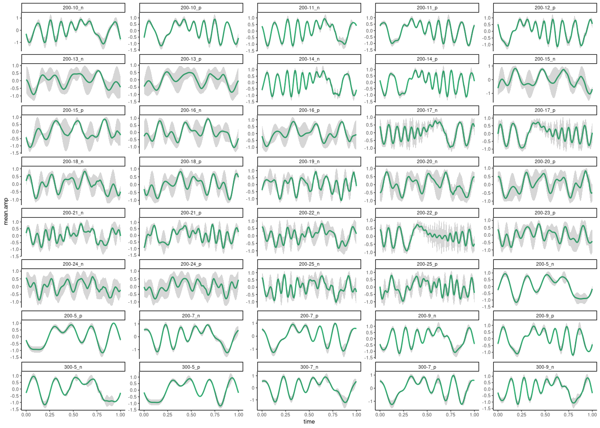

Measuring schroeder periods
Fine scale acoustic perception in zebra finches
Source code and data found at https://github.com/maRce10/acoustic-fine-features-zebra-finch
1 Purpose
- Detect start and end of periods in a schroeder using amplitude cross-correlation
- Compare methods for measuring fine scale structural variation and periodicity in schroeders
2 Report overview
3 Synthetizing schroeders
3.1 Function to make schroeders
Code
qwindpc <- function(rftime, srate, sig) {
ramppts <- round((rftime/1000) * srate)
hold1 <- seq(0, 1, length.out = ramppts + 1)
onramp <- sin(0.5 * pi * hold1)^2
offramp <- cos(0.5 * pi * hold1)^2
steady <- rep(1, length(sig) - (2 * ramppts) - 2)
wind <- c(onramp, steady, offramp)
if (length(wind) > length(sig)) {
print("Window not applied, block too short for window")
} else {
sig <- wind * sig
}
return(sig)
}
make_schroeder <- function(samp.rate = 44100, f0, dur = 1000, save.wave = FALSE,
plot = TRUE, n.components, scalar = 1, color = wave_col, path = ".",
file.name = NULL) {
t <- seq(1/samp.rate, 1, by = 1/samp.rate)
sumwavepos <- rep(0, samp.rate)
# number of samples
durpts <- round((dur/1000) * samp.rate)
N <- n.components
phase <- rep(0, N)
amplin <- rep(1, N)
f <- rep(0, N)
Ns <- 1:N
for (n in Ns) {
compnum <- n
phase[compnum] <- scalar * pi * compnum * (compnum - 1)/N
f[n] <- f0 + ((compnum - 1) * f0)
}
wave <- matrix(0, nrow = N, ncol = length(t))
for (i in Ns) {
wave[i, ] <- amplin[i] * cos((2 * pi * f[i] * t) + phase[i])
sumwavepos <- sumwavepos + wave[i, ]
}
posschr <- sumwavepos[1:durpts]/max(abs(sumwavepos[1:durpts]))
# plot(t[1:length(posschr)], posschr, type = 'l')
spectr <- fft(sumwavepos)
power <- abs(spectr)^2
sample <- length(t)/max(t)
freq <- (1:length(t)) * sample/length(t)
powerdb <- 10 * log10(power[1:(length(t)/2)])
rftime <- 10
posschr <- qwindpc(rftime, samp.rate, posschr)
posschr <- posschr/max(abs(posschr))
wave_obj <- tuneR::normalize(tuneR::Wave(posschr, samp.rate = samp.rate,
bit = 16), unit = "16")
if (plot) {
opar <- par()
opar$cin <- opar$cra <- opar$sci <- opar$cxy <- opar$din <- opar$csi <- opar$page <- NULL
# on.exit(par(opar))
par(mfrow = c(2, 1), mar = c(5, 4, 0, 0) + 0.1)
plot(freq[1:(length(t)/2)], powerdb, type = "l", xlim = c(0,
5200), xlab = "Frequency (Hz)", ylab = "Power(dB)", col = color)
seewave::oscillo(wave = wave_obj, colwave = color)
}
# Save audio to a file
if (save.wave) {
if (is.null(file.name)) {
file.name <- paste0("f0-", f0, "_ncomp-", N, "_", if (scalar ==
1)
"pos" else "neg", ".wav")
}
writeWave(object = wave_obj, filename = file.path(path, file.name),
extensible = FALSE)
} else {
return(wave_obj)
}
}3.1.1 Schroeder at 700 Hz with 7 components (harmonics)
Positive
Code
Negative

3.1.2 Schroeder with 10 components
Positive
Code
Negative
3.2 Make schroeders
Full factorial design of the following features:
- Components: from 1 to 25 (21 values)
- Fundamental frequency: from 200 to 800 (7 values)
- Sign: 1 and -1
- 294 schroeders
Create schroeders as individual sound files
Code
source("~/Dropbox/Projects/acoustic_fine_features_zebra_finch/scripts/make_schroeder.R")
shr_tab <- expand.grid(type = c(-1, 1), components = seq(5, 25, 1),
f0 = seq(200, 800, 100))
nrow(shr_tab)
shr_tab$name <- paste0(f_pad_zero(x = 1:nrow(shr_tab), width = 3),
"_f0-", shr_tab$f0, "_ncomp-", shr_tab$components, "_", ifelse(shr_tab$type ==
1, "pos", "neg"), ".wav")
out <- warbleR:::pblapply_wrblr_int(seq_len(nrow(shr_tab)), function(x) {
make_schroeder(n.components = shr_tab$components[x], samp.rate = 44100,
f0 = shr_tab$f0[x], dur = 1000, save.wave = TRUE, plot = FALSE,
scalar = shr_tab$type[x], color = "red", path = "./data/processed/schroeders",
file.name = shr_tab$name[x])
})Put Schroeders into a single sound file
Code
est_schr <- warbleR::selection_table(whole.recs = TRUE, path = "./data/processed/schroeders",
extended = TRUE, confirm.extended = FALSE)
est_schr$bottom.freq <- (as.numeric(gsub("f0-", "", (sapply(strsplit(est_schr$sound.files,
split = "_"), "[[", 2)))) - 50)/1000
est_schr$top.freq <- freq_range(X = est_schr, threshold = 2, fsmooth = 0.8,
parallel = 13)$top.freq
est_schr$f0 <- gsub("f0-", "", sapply(strsplit(est_schr$sound.files,
split = "_"), "[[", 2))
est_schr$label <- gsub("os.wav_1|eg.wav_1", "", sapply(strsplit(est_schr$sound.files,
split = "ncomp-"), "[[", 2))
saveRDS(est_schr, "./data/processed/extended_selection_table_schroeders.RDS")
master <- master_sound_file(X = est_schr, file.name = "schroeder_master",
dest.path = "./data/processed/", gap.duration = 0.8, cex = 14)
write.csv(master, "./data/processed/master_annotations_schroeders.csv",
row.names = FALSE)
master$f0 <- c("start_marker", paste("f0", est_schr$f0), "")
master$label <- c("marker", est_schr$label, "marker")
Rraven::exp_raven(master, path = "./data/processed/", sound.file.path = "./data/processed/")
warbleR::full_spectrograms(master, path = "./data/processed/", sxrow = duration(readWave("./data/processed/schroeder_master.wav"))/12,
rows = 12, horizontal = TRUE, dest.path = "./data/processed/spectrograms",
collevels = seq(-150, 0, 5), labels = "label", song = "f0", wl = 2000)4 Detecting periodicity
- Create a function that returns each detected segment in a list
- Two methods:
- Empirical Mode Decomposition (EMD)
- Time Autocorrelation (ac)
- The function can plot the mean period +/- standard deviation
Code
est_schr <- readRDS("./data/processed/extended_selection_table_schroeders.RDS")
mean_segment <- function(wave, cores = 1, plot = TRUE, pb = TRUE,
thinning = 1, col = wave_col, mean = TRUE, type = "ac", npeak = 20) {
# thin
if (thinning < 1) {
if (length(wave@left) * thinning < 10) {
stop2("thinning is too high, no enough samples left for at least 1 sound file")
}
# reduce size of envelope
wavefrm <- stats::approx(x = seq(0, duration(wave), length.out = length(wave@left)),
y = wave@left, n = round(length(wave@left) * thinning),
method = "linear")$y
} else {
wavefrm <- wave@left
}
# get empirical mode decomposition
if (type == "EMD") {
emds <- EMD::emd(wavefrm, seq_len(length(wavefrm)), boundary = "wave")
perd <- emds$imf[, 4]/max(emds$imf[, 4])
# plot(x = seq_len(length(wavefrm)), y = perd, type =
# 'l') lines(y = wavefrm / max(wavefrm), x =
# seq_len(length(wavefrm)), col = 'gray', lty = 2)
}
if (type == "ac") {
ac <- acf(x = wavefrm, lag.max = length(wavefrm), type = "covariance",
demean = FALSE, plot = FALSE)
perd <- ac$acf/max(ac$acf)
}
tpks <- seewave::fpeaks(cbind(seq_len(length(perd)), perd), plot = FALSE,
threshold = 0.5)
if (nrow(tpks) > npeak) {
tpks <- tpks[1:npeak, ]
}
segment_df <- data.frame(selec = seq_len(nrow(tpks)), pos = tpks[,
1], peak = tpks[, 2])
# get mean number of sample between peaks
mean_dist_peak <- round(mean(diff(segment_df$pos)))
segment_df$start <- segment_df$pos - mean_dist_peak/2
segment_df$end <- segment_df$pos + mean_dist_peak/2
# fix if values are out of wavefrm size
if (segment_df$start[1] > 0) {
segment_df$start[1] <- 0
}
if (segment_df$end[nrow(segment_df)] > length(wavefrm)) {
segment_df$end[nrow(segment_df)] <- length(wavefrm)
}
# extract segments into a list
segments <- lapply(seq_len(nrow(segment_df)), function(x) {
wavefrm[segment_df$start[x]:segment_df$end[x]]
})
# make all the same number of samples
segments <- lapply(segments, function(x) {
approx(x, n = max(sapply(segments, length)))$y
})
# normalize between 1, -1
segments <- lapply(segments, function(x) {
x/max(x)
})
# put all segments in a data frame
segments <- as.data.frame(segments, col.names = seq_len(length(segments)))
# compute mean segment
mean_segment <- rowMeans(segments)
if (plot) {
mean_segment_df <- data.frame(time = seq(0, 1, length.out = nrow(segments)),
mean.amp = rowMeans(segments), sd.amp = apply(segments,
1, sd))
gg <- ggplot(data = mean_segment_df, mapping = aes(x = time,
y = mean.amp)) + geom_line(color = wave_col) + geom_ribbon(aes(ymin = mean.amp -
sd.amp, ymax = mean.amp + sd.amp), alpha = 0.2) + theme_classic(base_size = 25)
print(gg)
}
if (mean) {
return(mean_segment)
} else {
return(segments)
}
}4.1 Test function
mean period +/- standard deviation using autocorrelation
4.2 Get mean schroeder cycles
4.2.1 EMD method
Code
est_schr <- readRDS("./data/processed/extended_selection_table_schroeders.RDS")
mean_schroeders <- warbleR:::pblapply_wrblr_int(cl = 20, seq_len(nrow(est_schr)),
function(x) {
wave <- read_wave(est_schr, index = x)
seg <- try_na(mean_segment(wave, plot = FALSE, mean = FALSE))
return(seg)
})
names(mean_schroeders) <- paste(est_schr$f0, est_schr$label, sep = "-")
saveRDS(mean_schroeders, "./data/processed/mean_schroeders_emd.RDS")Code
mean_schroeders <- readRDS("./data/processed/mean_schroeders_emd.RDS")
mean_schroeders <- mean_schroeders[!sapply(mean_schroeders, function(x) is.na(x[[1]][1]))]
mean_schroeders_list <- lapply(seq_len(length(mean_schroeders)), function(x) {
data.frame(schroeder = names(mean_schroeders)[x], time = seq(0,
1, length.out = nrow(mean_schroeders[[x]])), mean.amp = rowMeans(mean_schroeders[[x]]),
sd.amp = apply(mean_schroeders[[x]], 1, sd))
})
mean_schroeders_df <- do.call(rbind, mean_schroeders_list)
ggplot(data = mean_schroeders_df[mean_schroeders_df$schroeder %in%
unique(mean_schroeders_df$schroeder)[1:40], ], mapping = aes(x = time,
y = mean.amp)) + geom_line(color = wave_col) + geom_ribbon(aes(ymin = mean.amp -
sd.amp, ymax = mean.amp + sd.amp), alpha = 0.2) + theme_classic(base_size = 5) +
facet_wrap("~ schroeder", ncol = 5, scales = "free_y")4.2.2 Autocorrelation method
Code
est_schr <- readRDS("./data/processed/extended_selection_table_schroeders.RDS")
mean_schroeders <- warbleR:::pblapply_wrblr_int(cl = 20, seq_len(nrow(est_schr)),
function(x) {
wave <- read_wave(est_schr, index = x)
seg <- try_na(mean_segment(wave, plot = FALSE, mean = FALSE,
type = "ac", thinning = 0.8))
return(seg)
})
names(mean_schroeders) <- paste(est_schr$f0, est_schr$label, sep = "-")
saveRDS(mean_schroeders, "./data/processed/mean_schroeders_ac.RDS")Code
mean_schroeders <- readRDS("./data/processed/mean_schroeders_ac.RDS")
mean_schroeders <- mean_schroeders[!sapply(mean_schroeders, function(x) is.na(x[[1]][1]))]
mean_schroeders_list <- lapply(seq_len(length(mean_schroeders)), function(x) {
data.frame(schroeder = names(mean_schroeders)[x], time = seq(0,
1, length.out = nrow(mean_schroeders[[x]])), mean.amp = rowMeans(mean_schroeders[[x]]),
sd.amp = apply(mean_schroeders[[x]], 1, sd))
})
mean_schroeders_df <- do.call(rbind, mean_schroeders_list)
ggplot(data = mean_schroeders_df[mean_schroeders_df$schroeder %in%
unique(mean_schroeders_df$schroeder)[1:40], ], mapping = aes(x = time,
y = mean.amp)) + geom_line(color = wave_col) + geom_ribbon(aes(ymin = mean.amp -
sd.amp, ymax = mean.amp + sd.amp), alpha = 0.2) + theme_classic(base_size = 5) +
facet_wrap("~ schroeder", ncol = 5, scales = "free_y")
5 Measuring schroeder dissimilarity
5.1 Dynamic-time warping pairwise distance
- Both Schroeders have the same length
- One is duplicated and the other one is slide across the duplicated one
- The minimum DTW distance is kept as a dissimilarity measure
Code
mean_schroeders <- readRDS("./data/processed/mean_schroeders_ac.RDS")
nms <- names(mean_schroeders)
# nms <- grep(pattern = '200|400|600|800', nms, value = TRUE)
cmbs <- t(combn(nms, 2))
min_dist_l <- pbapply::pbsapply(cl = 22, 1:nrow(cmbs), function(x) {
s1 <- rowMeans(mean_schroeders[[cmbs[x, 1]]])
s2 <- rowMeans(mean_schroeders[[cmbs[x, 2]]])
# make same length if (length(s1) != length(s2))
s1 <- approx(s1, n = 100)$y
s2 <- approx(s2, n = 100)$y
# duplicate 1
s1 <- rep(s1, 2)
# run dtw over longer vector
dists <- vapply(seq_len(length(s1) - length(s2)), function(x) {
segment <- s1[x:min(c(x + length(s2) - 1), length(s1))]
dtw_dist <- warbleR::try_na(dtw::dtwDist(mx = rbind(s2, segment)))
return(dtw_dist[1, 2])
}, FUN.VALUE = numeric(1))
return(data.frame(schr1 = cmbs[x, 1], schdr2 = cmbs[x, 2], min(dists)))
})
min_dists <- do.call(rbind, min_dist_l)
min_dists <- as.data.frame(matrix(min_dists[, 1], ncol = 3, byrow = TRUE))
names(min_dists) <- c("schr1", "schr2", "dist")
min_dists$dist <- as.numeric(min_dists$dist)
saveRDS(min_dists, "./data/processed/dtw_distance_ac_segments.RDS")6 Compare dissimilarity between schroeders using different methods
7 methods:
- Dynamic time warping (DTW) distances from schroeder waveform
- Raven’s spectrographic features
- warbleR’s spectrographic features
- warbleR cross-correlation of fourier spectrograms
- warbleR cross-correlation of mel-frequency spectrograms
- DTW on warbleR’s dominant frequency contours
- DTW on Raven’s peak frequency contours
6.1 Waveform DTW
Code
min_dists <- readRDS("./data/processed/dtw_distance_ac_segments.RDS")
dist_tri <- PhenotypeSpace::rectangular_to_triangular(min_dists)
freq_bi_tri <- as.dist(binary_triangular_matrix(group = sapply(strsplit(rownames(dist_tri),
"-"), "[[", 1)))
comp_bi_tri <- as.dist(binary_triangular_matrix(group = gsub("_n|_p",
"", sapply(strsplit(rownames(dist_tri), "-"), "[[", 2))))
sign_bi_tri <- as.dist(binary_triangular_matrix(group = sapply(strsplit(rownames(dist_tri),
"_"), "[[", 2)))
rect_var <- cbind(as.dist(dist_tri), freq_bi_tri, comp_bi_tri, sign_bi_tri)
# # convert to 100 km unit rect_var[, 2] <- rect_var[, 2]/1e+05
# rect_var <- cbind(rect_var, residuals(lm(geo_dists ~
# call_member_binary, as.data.frame(rect_var))))
colnames(rect_var) <- c("dtw_dist", "frequency", "components", "sign")
source("~/Dropbox/Projects/geographic_call_variation_yellow-naped_amazon/scripts/MRM2.R")
mod <- MRM2(formula = dtw_dist ~ frequency + components + sign, nperm = 10000,
mat = rect_var)
saveRDS(mod, "./data/processed/matrix_correlation_dtw_distnace.RDS")6.2 Raven’s spectrographic features
Code
rav_dat <- imp_raven(path = "./data/processed", files = "schroeder_master_raven_measurements.txt",
warbler.format = TRUE, all.data = TRUE)
rav_dat <- rav_dat[grep(pattern = "marker", rav_dat$f0, invert = TRUE),
]
rav_dat <- rav_dat[, grep("contour|PFC Slope", ignore.case = TRUE,
x = names(rav_dat), invert = TRUE)]
pca <- prcomp(x = rav_dat[, names(rav_dat) %in% c("Agg Entropy (bits)",
"Avg Entropy (bits)", "Avg Power Density (dB FS/Hz)", "BW 50% (Hz)",
"BW 90% (Hz)", "Center Freq (Hz)", "Center Time Rel.", "Delta Freq (Hz)",
"Dur 50% (s)", "Dur 90% (s)", "Energy (dB FS)", "Freq 25% (Hz)",
"Freq 5% (Hz)", "Freq 75% (Hz)", "Freq 95% (Hz)", "Inband Power (dB FS)",
"Max Entropy (bits)", "Max Freq (Hz)", "Min Entropy (bits)", "Peak Freq (Hz)",
"PFC Avg Slope (Hz/ms)", "PFC Max Freq (Hz)", "PFC Max Slope (Hz/ms)",
"PFC Min Freq (Hz)", "PFC Min Slope (Hz/ms)", "PFC Num Inf Pts",
"Peak Power Density (dB FS/Hz)", "Peak Time (s)", "Peak Time Relative",
"Time 25% (s)", "Time 25% Rel.", "Time 5% (s)", "Time 5% Rel.",
"Time 75% (s)", "Time 75% Rel.", "Time 95% (s)", "Time 95% Rel.")],
scale. = TRUE)
rav_dat$pc1 <- pca$x[, 1]
rav_dat$pc2 <- pca$x[, 2]
rav_dat$comp <- sapply(strsplit(rav_dat$label, "_"), "[[", 1)
rav_dat$sign <- sapply(strsplit(rav_dat$label, "_"), "[[", 2)
rav_dat$label <- paste(rav_dat$f0, rav_dat$label, sep = "-")
dist_tri <- dist(rav_dat[, c("pc1", "pc2")])
freq_bi_tri <- as.dist(binary_triangular_matrix(group = rav_dat$f0))
comp_bi_tri <- as.dist(binary_triangular_matrix(group = rav_dat$comp))
sign_bi_tri <- as.dist(binary_triangular_matrix(group = rav_dat$sign))
rect_var <- cbind(as.dist(dist_tri), freq_bi_tri, comp_bi_tri, sign_bi_tri)
colnames(rect_var) <- c("rav_dist", "frequency", "components", "sign")
source("~/Dropbox/Projects/geographic_call_variation_yellow-naped_amazon/scripts/MRM2.R")
mod <- MRM2(formula = rav_dist ~ frequency + components + sign, nperm = 10000,
mat = rect_var)
saveRDS(mod, "./data/processed/matrix_correlation_raven_measurements_distance.RDS")6.3 warbleR’s spectrographic features
Code
wsp <- spectro_analysis(est_schr, harmonicity = TRUE, nharmonics = 5)
# keep columns with no NAs
wsp <- wsp[complete.cases(wsp), ]
pca <- prcomp(x = wsp[, -c(1:3)])
wsp$pc1 <- pca$x[, 1]
wsp$pc2 <- pca$x[, 2]
wsp_tri <- dist(wsp[, c("pc1", "pc2")])
freq_bi_tri <- as.dist(binary_triangular_matrix(group = substr(sapply(strsplit(wsp$sound.files,
"_"), "[[", 2), start = 4, 6)))
comp_bi_tri <- as.dist(binary_triangular_matrix(group = substr(sapply(strsplit(wsp$sound.files,
"_"), "[[", 3), start = 7, 8)))
sign_bi_tri <- as.dist(binary_triangular_matrix(group = ifelse(grepl("pos",
wsp$sound.files), "pos", "neg")))
rect_var <- cbind(wsp_tri, freq_bi_tri, comp_bi_tri, sign_bi_tri)
colnames(rect_var) <- c("wrbl_sp", "frequency", "components", "sign")
source("~/Dropbox/Projects/geographic_call_variation_yellow-naped_amazon/scripts/MRM2.R")
mod <- MRM2(formula = wrbl_sp ~ frequency + components + sign, nperm = 10000,
mat = rect_var)
saveRDS(mod, "./data/processed/matrix_correlation_warbler_measurements_distance.RDS")6.4 warbleR’s fourier cross-correlation
Code
xc <- readRDS("./data/processed/fourier_cross_correlation_schroeder.RDS")
freq_bi_tri <- as.dist(binary_triangular_matrix(group = substr(sapply(strsplit(rownames(xc),
"_"), "[[", 2), start = 4, 6)))
comp_bi_tri <- as.dist(binary_triangular_matrix(group = substr(sapply(strsplit(rownames(xc),
"_"), "[[", 3), start = 7, 8)))
sign_bi_tri <- as.dist(binary_triangular_matrix(group = ifelse(grepl("pos",
rownames(xc)), "pos", "neg")))
rect_var <- cbind(as.dist(1 - xc), freq_bi_tri, comp_bi_tri, sign_bi_tri)
colnames(rect_var) <- c("fourier_xc", "frequency", "components", "sign")
source("~/Dropbox/Projects/geographic_call_variation_yellow-naped_amazon/scripts/MRM2.R")
mod <- MRM2(formula = fourier_xc ~ frequency + components + sign,
nperm = 10000, mat = rect_var)
saveRDS(mod, "./data/processed/matrix_correlation_fourier_cross_correlation.RDS")6.5 warbleR’s mel-frequency cross-correlation
Code
xc <- readRDS("./data/processed/mel_frequency_cross_correlation_schroeder.RDS")
freq_bi_tri <- as.dist(binary_triangular_matrix(group = substr(sapply(strsplit(rownames(xc),
"_"), "[[", 2), start = 4, 6)))
comp_bi_tri <- as.dist(binary_triangular_matrix(group = substr(sapply(strsplit(rownames(xc),
"_"), "[[", 3), start = 7, 8)))
sign_bi_tri <- as.dist(binary_triangular_matrix(group = ifelse(grepl("pos",
rownames(xc)), "pos", "neg")))
rect_var <- cbind(as.dist(1 - xc), freq_bi_tri, comp_bi_tri, sign_bi_tri)
colnames(rect_var) <- c("mel_xc", "frequency", "components", "sign")
source("~/Dropbox/Projects/geographic_call_variation_yellow-naped_amazon/scripts/MRM2.R")
mod <- MRM2(formula = mel_xc ~ frequency + components + sign, nperm = 10000,
mat = rect_var)
saveRDS(mod, "./data/processed/matrix_correlation_mel_cross_correlation.RDS")6.6 DTW on warbleR’s dominant frequency contours
Code
source("~/Dropbox/R_package_testing/warbleR/R/freq_DTW.R")
source("~/Dropbox/R_package_testing/warbleR/R/internal_functions.R")
est_schr <- readRDS("./data/processed/extended_selection_table_schroeders.RDS")
dtw_dists <- freq_DTW(est_schr, type = "dominant", img = FALSE)
saveRDS(dtw_dists, "./data/processed/dtw_distance_dominant_frequency_schroeder.RDS")Code
dtw_dists <- readRDS("./data/processed/dtw_distance_dominant_frequency_schroeder.RDS")
freq_bi_tri <- as.dist(binary_triangular_matrix(group = substr(sapply(strsplit(rownames(dtw_dists),
"_"), "[[", 2), start = 4, 6)))
comp_bi_tri <- as.dist(binary_triangular_matrix(group = substr(sapply(strsplit(rownames(dtw_dists),
"_"), "[[", 3), start = 7, 8)))
sign_bi_tri <- as.dist(binary_triangular_matrix(group = ifelse(grepl("pos",
rownames(dtw_dists)), "pos", "neg")))
rect_var <- cbind(as.dist(dtw_dists), freq_bi_tri, comp_bi_tri, sign_bi_tri)
colnames(rect_var) <- c("dtw_dists", "frequency", "components", "sign")
source("~/Dropbox/Projects/geographic_call_variation_yellow-naped_amazon/scripts/MRM2.R")
mod <- MRM2(formula = dtw_dists ~ frequency + components + sign, nperm = 10000,
mat = rect_var)
saveRDS(mod, "./data/processed/matrix_correlation_dtw_distances_dominant_frequency_contours.RDS")Code
$coef
dtw_dists pval
Int 40.9371913 1.0000
frequency 36.5954153 0.0001
components 14.7088471 0.0001
sign -0.1272663 0.7998
$r.squared
R2 pval
0.02716354 0.00010000
$F.test
F F.pval
400.8389 0.0001 6.7 DTW on Raven’s peak frequency contours
Code
source("~/Dropbox/R_package_testing/warbleR/R/freq_DTW.R")
source("~/Dropbox/R_package_testing/warbleR/R/internal_functions.R")
rav_dat <- imp_raven(path = "./data/processed", files = "schroeder_master_raven_measurements.txt",
warbler.format = TRUE, all.data = TRUE)
rav_dat <- rav_dat[grep(pattern = "marker", rav_dat$f0, invert = TRUE),
]
rav_dat <- rav_dat[, grep("contour|PFC Slope", ignore.case = TRUE,
x = names(rav_dat), invert = TRUE)]
rav_freq_cntr <- extract_ts(rav_dat, ts.column = "Peak Freq Contour (Hz)",
equal.length = TRUE)
est_schr <- readRDS("./data/processed/extended_selection_table_schroeders.RDS")
rav_dtw_dists <- freq_DTW(est_schr, ts.df = rav_freq_cntr, type = "dominant",
img = FALSE)
rownames(rav_dtw_dists) <- rav_dat$orig.sound.file
saveRDS(rav_dtw_dists, "./data/processed/dtw_distance_raven_dominant_frequency_schroeder.RDS")Code
rav_dtw_dists <- readRDS("./data/processed/dtw_distance_raven_dominant_frequency_schroeder.RDS")
freq_bi_tri <- as.dist(binary_triangular_matrix(group = substr(sapply(strsplit(rownames(rav_dtw_dists),
"_"), "[[", 2), start = 4, 6)))
comp_bi_tri <- as.dist(binary_triangular_matrix(group = substr(sapply(strsplit(rownames(rav_dtw_dists),
"_"), "[[", 3), start = 7, 8)))
sign_bi_tri <- as.dist(binary_triangular_matrix(group = ifelse(grepl("pos",
rownames(rav_dtw_dists)), "pos", "neg")))
rect_var <- cbind(as.dist(rav_dtw_dists), freq_bi_tri, comp_bi_tri,
sign_bi_tri)
colnames(rect_var) <- c("rav_dtw_dists", "frequency", "components",
"sign")
source("~/Dropbox/Projects/geographic_call_variation_yellow-naped_amazon/scripts/MRM2.R")
mod <- MRM2(formula = rav_dtw_dists ~ frequency + components + sign,
nperm = 10000, mat = rect_var)
saveRDS(mod, "./data/processed/matrix_correlation_dtw_distances_raven_dominant_frequency_contours.RDS")Code
$coef
rav_dtw_dists pval
Int 31283.8900 1.0000
frequency 84822.0756 0.0001
components 9133.2380 0.0001
sign 110.2405 0.8981
$r.squared
R2 pval
0.08806106 0.00010000
$F.test
F F.pval
1386.2498 0.0001
7 Takeaways
- Amplitude autocorrelation works better at getting periodicity
- Dynamic time warping dissimilarity but no other metrics capture sign differences between Schroeders
Session information
R version 4.1.0 (2021-05-18)
Platform: x86_64-pc-linux-gnu (64-bit)
Running under: Ubuntu 20.04.2 LTS
Matrix products: default
BLAS: /usr/lib/x86_64-linux-gnu/atlas/libblas.so.3.10.3
LAPACK: /usr/lib/x86_64-linux-gnu/atlas/liblapack.so.3.10.3
locale:
[1] LC_CTYPE=pt_BR.UTF-8 LC_NUMERIC=C
[3] LC_TIME=es_CR.UTF-8 LC_COLLATE=pt_BR.UTF-8
[5] LC_MONETARY=es_CR.UTF-8 LC_MESSAGES=pt_BR.UTF-8
[7] LC_PAPER=es_CR.UTF-8 LC_NAME=C
[9] LC_ADDRESS=C LC_TELEPHONE=C
[11] LC_MEASUREMENT=es_CR.UTF-8 LC_IDENTIFICATION=C
attached base packages:
[1] stats graphics grDevices utils datasets methods base
other attached packages:
[1] ecodist_2.0.9 PhenotypeSpace_0.1.0 ggplot2_3.4.2
[4] baRulho_1.0.7 Rraven_1.0.13 viridis_0.6.3
[7] viridisLite_0.4.2 warbleR_1.1.28 NatureSounds_1.0.4
[10] tuneR_1.4.4 seewave_2.2.0 formatR_1.11
[13] knitr_1.43 kableExtra_1.3.4
loaded via a namespace (and not attached):
[1] nlme_3.1-162 bitops_1.0-7 spatstat.sparse_2.0-0
[4] webshot_0.5.4 httr_1.4.4 Deriv_4.1.3
[7] tools_4.1.0 vegan_2.5-7 utf8_1.2.3
[10] R6_2.5.1 rpart_4.1-15 DBI_1.1.3
[13] mgcv_1.8-42 colorspace_2.1-0 permute_0.9-5
[16] raster_3.4-13 withr_2.5.0 sp_1.5-1
[19] tidyselect_1.2.0 gridExtra_2.3 compiler_4.1.0
[22] cli_3.6.1 rvest_1.0.3 xml2_1.3.3
[25] labeling_0.4.2 scales_1.2.1 spatstat.data_2.1-0
[28] pbapply_1.7-2 proxy_0.4-27 dtw_1.23-1
[31] goftest_1.2-2 systemfonts_1.0.4 stringr_1.5.0
[34] digest_0.6.32 spatstat.utils_2.2-0 Sim.DiffProc_4.8
[37] rmarkdown_2.23 svglite_2.1.0 pkgconfig_2.0.3
[40] htmltools_0.5.5 fastmap_1.1.1 htmlwidgets_1.5.4
[43] rlang_1.1.1 rstudioapi_0.14 farver_2.1.1
[46] generics_0.1.3 jsonlite_1.8.7 dplyr_1.0.10
[49] RCurl_1.98-1.12 magrittr_2.0.3 Matrix_1.5-4.1
[52] Rcpp_1.0.11 munsell_0.5.0 fansi_1.0.4
[55] abind_1.4-5 lifecycle_1.0.3 stringi_1.7.12
[58] yaml_2.3.7 MASS_7.3-60 brio_1.1.3
[61] grid_4.1.0 parallel_4.1.0 crayon_1.5.2
[64] deldir_0.2-10 lattice_0.21-8 splines_4.1.0
[67] tensor_1.5 pillar_1.9.0 rjson_0.2.21
[70] spatstat.geom_2.2-2 fftw_1.0-7 codetools_0.2-18
[73] glue_1.6.2 packrat_0.9.0 evaluate_0.21
[76] remotes_2.4.2 png_0.1-7 vctrs_0.6.3
[79] testthat_3.1.9 gtable_0.3.3 spatstat.core_2.3-0
[82] polyclip_1.10-0 assertthat_0.2.1 xfun_0.39
[85] signal_0.7-7 tibble_3.2.1 sketchy_1.0.2
[88] cluster_2.1.2 xaringanExtra_0.7.0